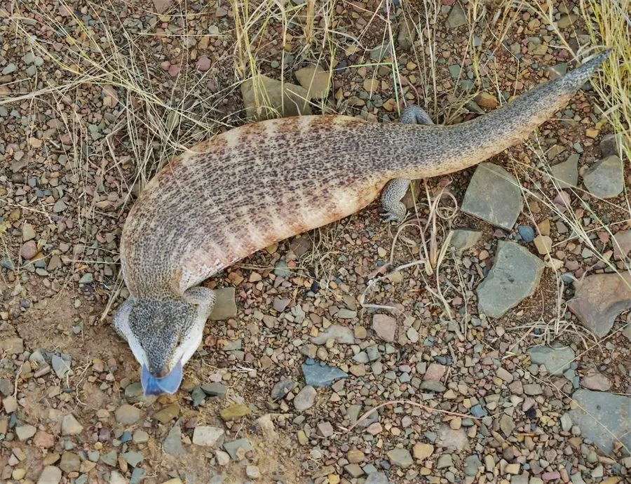

爬行动物 · 动物界
蓝舌石龙子 Tiliqua scincoides

澳大利亚常见的粗壮石龙子，受惊时伸出鲜蓝色舌头威吓对方，卵胎生，是受欢迎的宠物蜥蜴，性情温和。
- 分类
- 门脊索动物门纲爬行纲目有鳞目科石龙子科属蓝舌石龙子属
- 栖息环境
- 澳大利亚的森林、灌丛、草原、花园与农田
- 地理分布
- 澳大利亚东部和东南部地区
- 保护级别
- IUCN 无危（LC）；CITES 附录 III；非中国原产
物种志
蓝舌石龙子体长 40–60 厘米，身体粗壮，四肢短小，尾巴较短而粗，头部呈三角形；体色以灰褐、黄褐或淡褐色为主，背部常有深色横纹或斑块，鳞片光滑；它最著名的是那条鲜蓝色的舌头，受惊时会张开嘴、伸出蓝舌并鼓起身体威吓对方。
它分布于澳大利亚的森林、灌丛、草原和城市花园，多在白天活动，行动缓慢，食性很杂，吃昆虫、蜗牛、果实、花朵和小型动物。它是卵胎生蜥蜴，雌蜥妊娠约 4–5 个月后产下 5–15 只幼蜥。蓝舌石龙子性情温和，容易饲养，是澳大利亚最受欢迎的宠物蜥蜴之一；它无毒，受到威胁时主要靠蓝舌和鼓胀身体自卫，野外遇到时不必惊慌。
形态与习性
- 食性昆虫、蜗牛、果实、花朵和小型动物
- 体长40–60 cm
- 体重约 300–500 g
- 繁殖卵胎生，妊娠 4–5 个月，每胎 5–15 只
- 活动节律昼行性，行动缓慢
趣味知识
- 蓝舌石龙子受惊时会伸出鲜蓝色的舌头，吓退捕食者。
- 它身体粗壮、四肢短小，行动缓慢但性情温和。
- 蓝舌石龙子是卵胎生蜥蜴，雌蜥直接产下活的幼蜥。